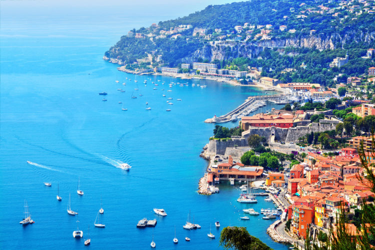

France
Франция
Обзор
«Лучше Франции пока ничего не придумано» — эта нахальная, если не сказать резче, фраза де Голля так и напрашивается на суровое опровержение, хотя бы в масштабах Европы. Наверняка же у сопредельных стран найдется, чем уесть заносчивых лягушатников! Взять, к примеру, знаменитые фахверковые дома Германии. Что? В Эльзасе такие же? Гм, действительно. Ладно, смотрим на соседнюю Бельгию с ее особым шармом ухоженной деревни, аутентичной картошкой фри и «винным» пивом... Что? Все это найдется и во Нор-Па-де-Кале? Черт, в самом деле так. Ну хорошо, но уж чисто британским-то фишкам — туманам с Гольфстрима, красным телефонным будкам, плетистым розам на крупнокаменных стенах деревенских домов и вересковым пустошам с исполинской галькой обкатанных ледниками валунов — им-то во Франции взяться точно неоткуда? И снова мимо: в не столь знаменитой, как Париж или Ницца, но милой сердцу многих путешественников Бретани всего этого едва ли не больше, чем в Англии. Если же говорить о южных соседях, то поклонники Италии почувствуют себя как дома в солнечном Провансе, а Испании — в горах Пиренеев и на сухих равнинах Лангедока.
И никак не получится промолчать о тысяче других вещей, которые и делают Францию — Францией. О рокоте прилива у подножия «восьмого чуда света» горы Сен-Мишель, о замках Луары — изящных, будто резные шкатулки эпохи Ренессанса. О гениальной безвкусице Эйфелевой башни и цветных бликах средневековых витражей Сент-Шапель. О горгульях Нотр-Дама, вонзивших каменный взгляд в стеклянные грани Дефанса, о горбатых переулках Монмартра, необъятных залах Лувра, хрустком воздухе Монблана и теплых ароматах выпечки и кофе с парижских бульваров... Шарль, ты, конечно, нахальный тип, но крыть — нечем!
Как добраться
Наиболее простым и очевидным способом — по воздуху.
Аэропорт Шарль-де-Голль обслуживает Париж и центр страны. Air France и «Air Astana» ежедневно осуществляют туда с десяток полетов — это самый удобный, но не слишком экономный вариант. Количество же стыковочных рейсов поистине огромно и как правило они дешевле (иногда в разы).
Аэропорт Лиона интересен прежде всего лыжникам и тем, кто хочет посетить восток страны, минуя Париж. В сезон аэропорт принимает чартеры, но прямых рейсов из Казахстана нет.
Аэропорт Ниццы обслуживает прямые рейсы альянса Sky Team. Он удобен туристам, направляющимся на Лазурный берег, но к сожалению, высокие аэропортовые сборы сказываются на цене билетов.
Отели
До недавнего времени среди французских отелей не было заведений категории 5*, максимальной была 4* люкс. В 2009 г. местные власти исправили это досадное упущение, введя в стране официальную высшую категорию «пять звезд». О существовании отелей уровня 1* лучше забыть сразу (да и о «двушках» долго не думать), «трехзвездники» же отличаются большим разбросом цен и качества. Лучшие из них вполне можно приравнять к европейским «четверкам». Цены на неплохой двухместный номер в приличном квартале Парижа начинаются от 75 EUR и стремятся к бесконечности. То же самое в провинции обойдется в 50-60 EUR (речь не идет о сверхтуристических местах типа Лазурного берега, где цены легко могут затмить парижские).
Есть два неплохих способа сэкономить на отелях. Во-первых, их всегда лучше бронировать за несколько месяцев: разница в цене может различаться на треть и более. Во-вторых, имеет прямой смысл выбирать размещение без завтрака — тот же продуктовый набор в ближайшем бистро обойдется дешевле, а наблюдение за городской жизнью и атмосфера парижского утра станут бесплатным приложением.
На горнолыжных курортах Франции отелей не слишком много, большинство объектов размещения представляют собой трех-, четырехэтажные шале. Апартаменты классифицируются привычными «звездами» от двух до четырех, а также полуофициальными «солнышками» (Pier Vacance) и «птичками» (Mayera). Кстати, французские гостиницы порой намеренно занижают собственную «звездность» — экономят на налогах.
достопримечательности

Путешественники со всего мира мечтают хотя бы раз в жизни побывать в стране, воспетой многочисленными поэтами и художниками, как одно из самых красивых и романтичных мест на свете, сохранившей богатейшую культуру и многовековые традиции. Речь идёт о Франции — стране, ставшей символом любви, красоты, изысканности и уникального исторического наследия. Париж является историческим центром страны, где в большом количестве расположены самые известные достопримечательности Франции.
1. Эйфелева башня (г. Париж) -
Если Вы ещё раздумываете, что посмотреть во Франции, незамедлительно отправляйтесь в его столицу, ведь достопримечательностей Парижа так много, что даже частичное их изучение не уложится в одну поездку. Символом Парижа, как вы уже догадываетесь, стала главная достопримечательность Франции - Эйфелева башня — один из самых посещаемых и узнаваемых архитектурных объектов в мире.

Это сейчас башня Эйфеля снискала мировую известность, а когда-то она вызывала неоднозначную реакцию среди парижан. В то время, как гости города восхищались монументальностью этого сооружения, многие жители, потрясённые размерами башни, были против её присутствия в городе и не раз требовали от властей разобрать это сооружение.
От сноса это архитектурное творение было спасено лишь благодаря наступлению эпохи радиочастотных волн, когда Эйфелева башня стала идеальным сооружением для установки радиоантенн.
2. Лувр (г. Париж) -

Бывшая крепость, некогда дворец, а теперь музей — все эти перевоплощения пережил на своём веку Лувр в Париже, ставший самым посещаемым музеем, куда ежегодно приезжают миллионы людей со всего мира. Самое далёкое прошлое и настоящее сплелись здесь в единое целое в сотнях тысяч экспонатов, из которых лишь 35 тысяч мы можем увидеть своими глазами. Всё дело в том, что для показа всех этих ценностей не хватит никаких экспозиционных площадей, при этом многим экспонатам требуются ещё и особые условия хранения.
3. Версальский дворец (г. Париж) -

Задавшись вопросом, что посмотреть во Франции, без раздумий отправляйтесь в один из самых респектабельных городов, расположенный в 20 км от столицы. Ведь здесь находится роскошный и сравнительно молодой дворцово-парковый комплекс, некогда служивший резиденцией французских королей, а сегодня ещё и ставший знаменитой достопримечательностью Франции. Это Версальский дворец — выдающийся шедевр в истории мирового зодчества. Планировка парка Версальского дворца также являет собой высшее достижение в парковом искусстве Франции.
Великолепные композиции садов и аллей, изысканные оранжереи, полные разнообразной растительности, живописные фонтаны Версальского дворца — всё это стало настоящим эталоном в архитектуре Европы в 18 веке.
Сам дворец, называемый также Дом французских королей, является основным строением, попасть в которое можно через позолоченные Королевские ворота. Первый этаж дворца предназначался для королевских подданных, а второй этаж заселяла сама королевская семья. Тронный зал использовался для проведения балов и спектаклей, а Зеркальная галерея стала местом проведения самых пышных и роскошных мероприятий королевского двора.
4. Лазурный берег или Французская Ривьера -

А отдельная категория гостей едет во Францию понежиться на морском пляже, насладиться великолепными видами природы, то есть, отдохнуть в полно смысле этого слова. Но и им есть, что посетить во Франции. Французская Ривьера или Лазурный берег — идеальное место для этих целей. Эта курортная зона славится на весь мир своими пляжами, чистым лазурным морем, высококлассными отелями, ресторанами и разнообразными развлечениями.
Лазурный берег — это не просто излюбленная многими туристами достопримечательность Франции и место отличного отдыха, но и земля удивительных контрастов. Так, например, тёплые солнечные пляжи здесь контрастируют с заснеженными приморскими Альпами, расположенными всего в 2 часах езды от побережья. Эта курортная зона представляет собой и весьма шумное место, куда приезжают миллионы туристов, а в небольших деревушках, расположенных у самых скал, царит тишина и безмятежность.
Климат Лазурного берега очень мягкий. Здесь нет ни палящего жара, ни морозного холода. Отдыхающим предоставлена масса развлечений на любой вкус. Любители азартных игр могут посетить местное казино, любители лошадей обязательно посетят ипподром, где регулярно проводятся скачки, а для отдыхающих с детьми есть большой выбор развлекательных парков, аквапарков, зоопарков. Словом, настоящее раздолье для каждого.
5. Дюна Пила (Аркашонский залив) -

В районе городка Аркашон, на берегу Аркашонского залива, расположилась «живая» природная достопримечательность Франции — Дюна Пила. Самая высокая дюна в Европе представляет собой огромную песчаную гору, которая постоянно перемещается и медленно растёт в высоту. Так, например. Ещё в 1855 году была зафиксирована высота дюны 35 метров, а сегодня её высота уже достигает 130 метров! Плюс ко всему, согласно исследованиям, эта гора песка ещё и движется в сторону берега примерно на 5 метров за год. Процесс образования песчаной горы начался около 8 тысяч лет назад и непрестанно продолжается до наших дней, этому способствуют постоянные ветры, морские приливы и отливы.
ОСегодня Дюна Пила стала популярным туристическим объектом, поэтому вокруг горы располагается соответствующая инфраструктура. Недалеко от горы, прямо среди сосен, обустроена автомобильная парковка, здесь же есть сувенирные лавки, кафе, где можно отведать устриц или мидий, и даже гостиница. А на вершину горы ведёт длинная лестница — впрочем, желающие вполне могут покорить гору своими силами.
Визы
Франция входит в список стран-участниц Шенгенского соглашения. Для поездки в страну гражданам РК и СНГ необходима виза и туристическая медицинская страховка. Французская таможня считается одной из самых беспроблемных в Евросоюзе, однако это не означает, что вы полностью гарантированы от неприятностей. Несколько простых советов помогут вам сэкономить нервы и деньги.
Ввоз
Денежные суммы больше 10 000 EUR подлежат обязательному декларированию (сюда входят наличные деньги, дорожные чеки, векселя и даже номинированные ценные бумаги).
Беспошлинно можно ввезти до 1 л крепкого алкоголя (крепче 22 %), либо до 2 л вина или пива.
Курильщики могут ввезти не больше 200 сигарет на взрослого путешественника.
Ни одно животное нельзя ввезти без ветеринарной справки (ввоз собак бойцовых пород запрещен).
С 2009 г. на территорию ЕС запрещен ввоз любой продукции, содержащей мясо и/или молоко — от тушенки до шоколадных конфет. Вы можете взять с собой плитку-другую любимого шоколада — но только черного! Состав продукта на упаковке должен быть указан на английском языке, разбираться с кириллицей таможня не станет.
Если вы путешествуете с ребенком, то имеете право на ввоз молочного детского питания (не более 2 кг и только в герметичной упаковке)
Ввоз лекарств во Францию разрешен, включая препараты, содержащие наркотические, психотропные вещества либо анаболики (но в этом случае необходимы рецепт и справка от врача). Есть ограничения по количеству — из расчета суточного потребления на 3 месяца максимум.
Ввоз икры разрешен до 250 г, но не относится к беспошлинным — таможенный офицер имеет право заставить вас заплатить даже за одну банку.
Запрещен ввоз в страну предметов, изготовленных из исчезающих видов растений и животных.
Вывоз
Проблем с вывозом товаров из Франции практически нет. В Казахстан без декларирования разрешено к ввозу не более 3 л любого алкоголя (неважно, коньяка или пива), а свыше 5 л запрещено вообще. Если в ваших чемоданах обнаружат больше трех одинаковых товаров, то могут их счесть коммерческой партией. В этом случае серьезный штраф — меньшее, что вам грозит
Связь и Wi-Fi
Все телефонные номера во Франции — 10-значные, причем начинаются с 0. Это зачастую сбивает с толку и служит источником ошибок (иногда дорогостоящих). Между тем все просто: 0 означает, что звонок местный, то есть совершается между французскими номерами внутри страны. Соответственно, если вы звоните с русского номера на французский, набирать первый 0 не нужно.
Есть превосходный способ избежать мучений с кодами — интернет телефония, благо точек бесплатного доступа к Wi-Fi в одном только Париже сотни. Опознать их легко по специальным бело-фиолетовым табличкам — как правило, они расположены в скверах, парках и возле общественных учреждений. При соединении вас попросят зарегистрироваться и предоставят двухчасовую сессию. Бесплатный Wi-Fi в гостиницах, ресторанах и даже точках общепита типа «Макдоналдс» — тоже скорее правило, чем исключение, поэтому без интернета остаться трудно.
Свяжитесь с нами!
Адрес
Семей, ул. Б.Момышулы 15
Semey, st. B. Momyshuly 15
ПОЗВОНИТЕ НАМ
87475122545
87021963485
ЧАСЫ РАБОТЫ
Понедельник Пятница ...10.00 - 20.00
Суббота ...10.00 - 18.00
Воскресения ...Закрыто